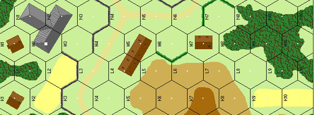

Preguntas y respuestas (aclaraciones oficiales)¶
Preguntas y respuestas (aclaraciones oficiales)¶
Regla 8.6 — P: ¿Pueden los pasajeros de semiorugas adyacentes formar grupos de fuego multi-hex? R: Sí.
Regla 11 — P: ¿Son acumulativos los modificadores por efectos del terreno? Ejemplo: ¿obtendrían los pasajeros de un VBC el +1 MTD por estar en un hex de bosque, además de las protecciones que aporta el blindaje? R: Sí. Observa, no obstante, que el +2 MTD por estar tras un muro de piedra no se aplicaría a la infantería montada en un semioruga, ya que esta ya dispone de ese MTD por estar en el semioruga. El propio semioruga, en cambio, sí podría usar el +2 MTD del muro de piedra contra cualquier fuego de MG dirigido contra el propio semioruga (no contra los pasajeros).
Regla 11.1 — P: ¿Se aplica el modificador "en edificio" a las unidades que disparan contra unidades adyacentes situadas en el mismo edificio? R: Sí.
Regla 11.6 — P: En el ejemplo de un grupo de fuego, si la unidad del centro dispara por separado, ¿pueden las dos 8-3-8 seguir combinándose para formar un grupo de fuego? R: No.
Regla 12.22 — P: Si dos líderes que están en un hex junto a una escuadra de infantería se desmoralizan, ¿cuántos chequeos de moral debe realizar cada unidad? R: El primer líder chequeado solo realiza el chequeo de moral exigido por la IFT; el segundo líder tendría que realizar el chequeo de moral de la IFT más un chequeo de moral normal, si el primer líder se desmoralizó. Suponiendo que el 2.º líder también se desmoralice, la escuadra tendría que realizar el chequeo de moral de la IFT y dos chequeos de moral normales.
Regla 13.41 — P: ¿Puede una unidad en huida huir hacia una posición enemiga que está fuera de su LDV al comienzo de la fase de huida, pero que sí está en la LDV de otras unidades amigas? R: Sí.
Regla 13.41 — P: ¿Es correcta la siguiente reformulación alternativa de 13.41? "Una unidad desmoralizada que esté en la LDV de una unidad enemiga no puede acercarse más a ella, ni siquiera aunque se desplace fuera de la LDV del enemigo." R: No.
Regla 13.41 — P: ¿Se consideran las unidades ocultas posiciones enemigas conocidas a efectos de esta regla? R: No; mientras la(s) unidad(es) enemiga(s) opte(n) por permanecer ocultas, la unidad desmoralizada es libre de huir en su dirección. La unidad oculta podría renunciar a su ocultación para negar a la unidad en huida esa ruta concreta, y al hacerlo eliminaría a la unidad en huida.
Regla 13.42 — P: ¿Se puede huir a través de un hex lleno de humo como si se estuviera tras un seto o muro? R: Sí; además, los VBC, restos/carcasas, atrincheramientos, búnkeres y barricadas pueden servir para alterar el terreno despejado a efectos de determinar la ruta de huida permitida y el fuego defensivo contra VBC adyacentes.
Regla 13.44 — P: Si el hex de edificio o bosque más cercano ya contiene unidades amigas, ¿pueden las unidades en huida huir hacia ese hex y superar los límites de apilamiento? R: No, pueden huir a través del hex pero no hacia él; todas las unidades en huida que excedan los límites de apilamiento son eliminadas. NOTA: las unidades desmoralizadas que estén en un hex objetivo excediendo los límites de apilamiento como resultado del fuego defensivo no se eliminan, salvo que el exceso de apilamiento siga existiendo al concluir la fase de huida siguiente.
Regla 14.6 — P: ¿Se aplica la moral de desesperación al fuego que provocó la desmoralización de la unidad? R: Sí, si ocurrió desde la fase de reorganización anterior. La moral de desesperación solo se aplica a aquellas unidades desmoralizadas que han recibido fuego durante el turno de jugador anterior.
Regla 15.1 — P: ¿Puede un jugador optar por no añadir el valor de liderazgo de un líder a un grupo de fuego situado en su hex? R: Sí. No se puede obligar a un jugador a usar el valor de liderazgo +1 de un mal líder, salvo en los chequeos de moral e intentos de reorganización, donde influye en todas las unidades del mismo hex.
Regla 15.2 — P: Si pilas de infantería amigas adyacentes tienen líderes en cada hex, ¿pueden las unidades de esos hexes combinar su fuego en un grupo de fuego multi-hex y seguir usando el modificador de liderazgo? R: Sí; siempre que cada hex de la cadena contenga un líder, y que el modificador de liderazgo total no supere el del líder menos eficaz de los implicados.
Regla 16.4 (y 31.4) — P: Si la infantería desembarca a un hex adyacente, ¿se le puede disparar en el hex desde el que desembarcó? R: Sí; pero recibiría un +1 MTD por estar debajo de un VBC. Si ese hex resultara estar en terreno despejado, también se aplicaría el -2 MTD por movimiento al descubierto, para un MTD neto de -1. Si el pasajero desembarcara directamente a un hex adyacente de terreno despejado, en ese hex adyacente solo se aplicaría el -2 MTD por fuego defensivo.
Regla 17.5 — P: ¿Puede usarse la penetración de MG contra la misma unidad objetivo si esta sobrevive al primer ataque, pero sigue moviéndose a lo largo de la LDV de la MG? R: No. Una unidad solo puede ser atacada una vez por fase por la misma MG.
Regla 17.5 — P: ¿Detienen la penetración los cráteres de proyectil, los trigales, los muros y los setos? R: Los muros sí, pero solo cuando están en el mismo nivel que el objetivo y el que dispara.
Regla 17.7 — P: Si una LDV se traza exactamente a lo largo del borde de un único hex lleno de humo, ¿se ve afectado el fuego? R: No, salvo en el caso del fuego penetrante de MG, donde el humo afectaría a todos los hexes objetivo potenciales situados a ese lado del borde de hex con humo. Por supuesto, el que dispara podría optar por trazar su fuego a través del hex contiguo sin humo y así evitar el humo por completo.
Regla 18.1 — P: Supón que una LMG y una MMG rusas están en el mismo grupo de fuego y se saca un '10' en el combate de fuego. ¿Quedan ambas MG fuera de servicio? R: No; aunque solo se usa una tirada de dados para resolver las averías de todas las armas de apoyo participantes, resulta evidente que solo la LMG con número de avería 10 se vería afectada.
Regla 18.42 — P: ¿Pueden las unidades rusas en estado berserk transportar armas de apoyo? R: Solo aquellas que no mermen su capacidad máxima de movimiento; p. ej., una escuadra puede transportar hasta tres puntos de porte, y un líder solo un punto de porte.
Regla 22.1 — P: Si un lanzallamas dispara contra un enemigo a 1 hex de distancia, ¿impactaría también a una unidad amiga que esté en la LDV a 2 hexes de distancia? R: Sí, y usando la misma tirada de dados.
Regla 22.7 — P: Si hay dos lanzallamas en un hex objetivo, ¿se ajusta la tirada del combate de fuego en -1 o en -2? R: -2.
Regla 23 — P: ¿Pueden las unidades regulares transportar lanzallamas y cargas de demolición mientras no los usen? R: Sí.
Regla 25.41 — P: ¿Aportan los líderes ocultos sus beneficios a las unidades amigas no ocultas que reciben fuego en su hex? R: No, salvo que el líder renuncie a su estado de ocultación, en cuyo caso todas las unidades ocultas del hex perderían su estado de ocultación.
Regla 27.3 — P: ¿Debe una escuadra tener capacidad de moverse 3 hexes —tras añadir cualquier bonificación por acompañamiento de líder y restar cualquier exceso de costes de porte— para poder usar el movimiento por alcantarillas? R: Sí.
Regla 30.4 — P: ¿Cuánto cuesta que un VBC pivote en el hex desde el que inicia su movimiento? R: 2 PM más el coste del terreno de cualquier hex al que se mueva.
Regla 31.7 — P: Si un VBC dispara cualquier armamento o es impactado por fuego defensivo mientras se mueve, ¿debe pagar el coste de 2 PM por cualquier infantería que se vea obligada a desmontar? R: Sí.
Regla 34.8 — P: ¿Puede una dotación expuesta sujeta a un chequeo de moral beneficiarse de un líder situado en el mismo hex? R: Sí.
Regla 35.1 — P: Si un VBC se avería al entrar en un hex de bosque o de edificio de madera, ¿puede aun así realizar un ataque de arrollamiento en ese hex? R: Sí, incluso si la dotación falla su chequeo de moral y abandona el VBC. Observa que, en ese caso, la dotación quedaría trabada en combate cuerpo a cuerpo con cualquier superviviente del ataque de arrollamiento.
Regla 35.1 — P: ¿Se puede arrollar a una unidad situada sobre una ficha de humo? R: Sí; pero el atacante sufre el modificador por humo a la tirada del combate de fuego, igual a la tirada de un dado.
Regla 36.22 — P: Si un pasajero de un VBC es atacado en combate cuerpo a cuerpo, ¿debe el pasajero desmontar independientemente del resultado? R: Sí.
Regla 36.24 — P: ¿Puede una unidad de infantería que logra destruir un carro en combate cuerpo a cuerpo regresar al hex desde el que avanzó en el mismo turno de jugador? R: No. Sin embargo, sí obtiene protección de los restos/carcasa (40.5).
Regla 36.4 — P: ¿Puede un líder realizar su propio ataque contra un VBC sin aplicar su valor de liderazgo, para aplicar ese valor en cambio al ataque de una escuadra con la que está apilado? R: No.
Regla 37.31 (y 37.41) — P: ¿Hay algún modificador por disparar armas de carga hueca con cohete contra VBC en movimiento? R: Sí, +2; se aplica el caso A de los modificadores a la tirada de determinación de impacto.
Regla 37.34 — P: ¿Puede un líder aplicar su modificador de liderazgo tanto a la tirada PARA IMPACTAR del bazooka o panzerfaust como a la tirada de potencia de fuego inherente de la escuadra que dispara el arma? R: No.
Regla 40.2 — P: ¿Son los límites de apilamiento para la infantería en un hex de restos/carcasa los mismos que para un vehículo en funcionamiento? R: Sí, salvo que ninguna unidad puede apilarse encima de unos restos/carcasa como pasajero, y que los cañones AT sí pueden emplazarse en un hex de restos/carcasa.
Regla 40.4 — P: ¿Se retiran del juego los restos/carcasa o se empujan a un hex adyacente? R: Se retiran del juego.
Regla 40.5 — P: El punto 40.5 dice que los restos/carcasa ofrecen cobertura a la infantería igual que los VBC, pero el ejemplo 1 de la pág. 13 muestra el fuego B sin modificar porque no pasa a través del contorno del VBC, mientras que 32.7 indica que las fichas de VBC anulan el -2 MTD por movimiento al descubierto. ¿Cuál es correcto? R: Ambos lo son... 32.7 se refiere al movimiento por detrás de una línea de vehículos contiguos, o de vehículos y obstrucciones de LDV, una situación que no se da en el ejemplo 1 de la página 13.
Regla 41.2 — P: ¿Pueden las dotaciones añadir los factores de la LMG a la potencia de fuego atacante en combate cuerpo a cuerpo? R: No.
Regla 45.2 — P: Si una ficha de FFE no se retira, sino que se vuelve a usar el turno siguiente, ¿cuenta este uso continuado a lo largo de varios turnos como una sola misión de fuego? R: No... cada turno de jugador en que se resuelve una FFE se trata como una nueva misión de fuego.
Regla 46.7 — P: Si la LDV del líder hacia un hex de FFE está bloqueada, ¿qué le ocurre al fuego de artillería? R: El ataque se produce con normalidad: el líder tiene que avistar el hex objetivo para la colocación o corrección de la FFE, no para su resolución.
Regla 47.2 — P: Si un semioruga armado es eliminado, ¿se tira por la supervivencia de los pasajeros del mismo modo que se hace con la dotación? R: Sí, cada unidad, incluida la dotación, tira por su supervivencia por separado. Todas las armas de apoyo se eliminan. Los pasajeros a bordo de un semioruga desarmado tienen la misma probabilidad de supervivencia, aunque no haya un número de supervivencia de dotación inherente impreso en la ficha.
Regla 47.4 — P: ¿Benefician los líderes pasajeros a la infantería situada debajo del vehículo? R: Sí, pero en el caso de un semioruga, el líder se consideraría expuesto como si disparara, según se describe en 47.7.
Regla 47.8 — P: ¿Está la dotación de un M10, Priest u otro VBC de techo abierto sujeta al fuego de infantería procedente de un hex adyacente de mayor elevación del mismo modo que los pasajeros de un semioruga? R: Sí, la dotación sufriría cualquier chequeo de moral o KIA exigido en la IFT y, si se desmoraliza o es eliminada, el VBC quedaría destruido.
Regla 48.5 — P: ¿Puede un cañón AT rotar 3 bordes de hex antes de cada disparo durante la fase de fuego defensivo, o solo puede rotar un total de 3 bordes de hex durante toda la fase de fuego defensivo? R: Lo segundo.
Regla 48.61 — P: ¿Puede un vehículo cargar un cañón AT y su dotación en la misma fase de movimiento? R: No. El vehículo debe entrar en el hex del cañón AT con la mitad de sus PM restantes y, como se indica en 31.7, la infantería solo puede embarcar en un vehículo si dicho vehículo permanece inmóvil durante todo el turno de ese jugador.
Regla 54.4 — P: Al usar la regla opcional 16, ¿se puede disparar contra una unidad que se mueve bajo una ficha de atrincheramiento en el hex de atrincheramiento antes de que "se meta debajo" del atrincheramiento? R: No, al jugador que se mueve se le concede automáticamente el beneficio del atrincheramiento en cuanto entra en el hex y manifiesta su uso del atrincheramiento declarando el número de FM que está utilizando en el hex.
Regla 56.1 — P: ¿Qué modificación de defensa se usa si un grupo de fuego multi-hex se dirige contra un búnker de tal modo que el fuego de un hex se traza a través del arco cubierto y el del otro hex se traza a través del arco no cubierto? R: En contra de 11.6, en tal situación el grupo de fuego debe dividirse en fuegos separados. Si insisten en disparar como un único grupo de fuego combinado, la modificación de defensa que se usa es la del arco no cubierto.
Regla 56.3 — P: ¿Es el arco cubierto de los búnkeres el mismo que el de los VBC? R: Sí; esto significa que las fichas de búnker nunca pueden colocarse centradas en un hex, como se hace con los vehículos.
Regla 57.2 — P: ¿Cómo se ve afectada la regla 8.6 (formar grupos de fuego desde hexes adyacentes) por la diferenciación de nivel superior? R: Las unidades situadas en niveles distintos se consideran adyacentes a efectos de formar grupos de fuego solo si la cadena de hexes adyacentes está conectada por un hex de escalera ocupado en ambos niveles.
